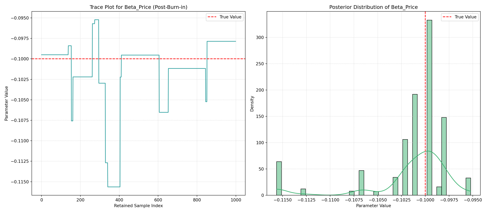

# set seed for reproducibility
set.seed(123)
# define attributes
brand <- c("N", "P", "H") # Netflix, Prime, Hulu
ad <- c("Yes", "No")
price <- seq(8, 32, by=4)
# generate all possible profiles
profiles <- expand.grid(
brand = brand,
ad = ad,
price = price
)
m <- nrow(profiles)
# assign part-worth utilities (true parameters)
b_util <- c(N = 1.0, P = 0.5, H = 0)
a_util <- c(Yes = -0.8, No = 0.0)
p_util <- function(p) -0.1 * p
# number of respondents, choice tasks, and alternatives per task
n_peeps <- 100
n_tasks <- 10
n_alts <- 3
# function to simulate one respondent’s data
sim_one <- function(id) {
datlist <- list()
# loop over choice tasks
for (t in 1:n_tasks) {
# randomly sample 3 alts (better practice would be to use a design)
dat <- cbind(resp=id, task=t, profiles[sample(m, size=n_alts), ])
# compute deterministic portion of utility
dat$v <- b_util[dat$brand] + a_util[dat$ad] + p_util(dat$price) |> round(10)
# add Gumbel noise (Type I extreme value)
dat$e <- -log(-log(runif(n_alts)))
dat$u <- dat$v + dat$e
# identify chosen alternative
dat$choice <- as.integer(dat$u == max(dat$u))
# store task
datlist[[t]] <- dat
}
# combine all tasks for one respondent
do.call(rbind, datlist)
}
# simulate data for all respondents
conjoint_data <- do.call(rbind, lapply(1:n_peeps, sim_one))
# remove values unobservable to the researcher
conjoint_data <- conjoint_data[ , c("resp", "task", "brand", "ad", "price", "choice")]
# clean up
rm(list=setdiff(ls(), "conjoint_data"))Multinomial Logit Model
This assignment expores two methods for estimating the MNL model: (1) via Maximum Likelihood, and (2) via a Bayesian approach using a Metropolis-Hastings MCMC algorithm.
1. Likelihood for the Multi-nomial Logit (MNL) Model
Suppose we have \(i=1,\ldots,n\) consumers who each select exactly one product \(j\) from a set of \(J\) products. The outcome variable is the identity of the product chosen \(y_i \in \{1, \ldots, J\}\) or equivalently a vector of \(J-1\) zeros and \(1\) one, where the \(1\) indicates the selected product. For example, if the third product was chosen out of 3 products, then either \(y=3\) or \(y=(0,0,1)\) depending on how we want to represent it. Suppose also that we have a vector of data on each product \(x_j\) (eg, brand, price, etc.).
We model the consumer’s decision as the selection of the product that provides the most utility, and we’ll specify the utility function as a linear function of the product characteristics:
\[ U_{ij} = x_j'\beta + \epsilon_{ij} \]
where \(\epsilon_{ij}\) is an i.i.d. extreme value error term.
The choice of the i.i.d. extreme value error term leads to a closed-form expression for the probability that consumer \(i\) chooses product \(j\):
\[ \mathbb{P}_i(j) = \frac{e^{x_j'\beta}}{\sum_{k=1}^Je^{x_k'\beta}} \]
For example, if there are 3 products, the probability that consumer \(i\) chooses product 3 is:
\[ \mathbb{P}_i(3) = \frac{e^{x_3'\beta}}{e^{x_1'\beta} + e^{x_2'\beta} + e^{x_3'\beta}} \]
A clever way to write the individual likelihood function for consumer \(i\) is the product of the \(J\) probabilities, each raised to the power of an indicator variable (\(\delta_{ij}\)) that indicates the chosen product:
\[ L_i(\beta) = \prod_{j=1}^J \mathbb{P}_i(j)^{\delta_{ij}} = \mathbb{P}_i(1)^{\delta_{i1}} \times \ldots \times \mathbb{P}_i(J)^{\delta_{iJ}}\]
Notice that if the consumer selected product \(j=3\), then \(\delta_{i3}=1\) while \(\delta_{i1}=\delta_{i2}=0\) and the likelihood is:
\[ L_i(\beta) = \mathbb{P}_i(1)^0 \times \mathbb{P}_i(2)^0 \times \mathbb{P}_i(3)^1 = \mathbb{P}_i(3) = \frac{e^{x_3'\beta}}{\sum_{k=1}^3e^{x_k'\beta}} \]
The joint likelihood (across all consumers) is the product of the \(n\) individual likelihoods:
\[ L_n(\beta) = \prod_{i=1}^n L_i(\beta) = \prod_{i=1}^n \prod_{j=1}^J \mathbb{P}_i(j)^{\delta_{ij}} \]
And the joint log-likelihood function is:
\[ \ell_n(\beta) = \sum_{i=1}^n \sum_{j=1}^J \delta_{ij} \log(\mathbb{P}_i(j)) \]
2. Simulate Conjoint Data
We will simulate data from a conjoint experiment about video content streaming services. We elect to simulate 100 respondents, each completing 10 choice tasks, where they choose from three alternatives per task. For simplicity, there is not a “no choice” option; each simulated respondent must select one of the 3 alternatives.
Each alternative is a hypothetical streaming offer consistent of three attributes: (1) brand is either Netflix, Amazon Prime, or Hulu; (2) ads can either be part of the experience, or it can be ad-free, and (3) price per month ranges from $4 to $32 in increments of $4.
The part-worths (ie, preference weights or beta parameters) for the attribute levels will be 1.0 for Netflix, 0.5 for Amazon Prime (with 0 for Hulu as the reference brand); -0.8 for included adverstisements (0 for ad-free); and -0.1*price so that utility to consumer \(i\) for hypothethical streaming service \(j\) is
\[ u_{ij} = (1 \times Netflix_j) + (0.5 \times Prime_j) + (-0.8*Ads_j) - 0.1\times Price_j + \varepsilon_{ij} \]
where the variables are binary indicators and \(\varepsilon\) is Type 1 Extreme Value (ie, Gumble) distributed.
The following code provides the simulation of the conjoint data.
Note
3. Preparing the Data for Estimation
To prepare the conjoint data for Multinomial Logit (MNL) model estimation, my primary task was to transform the categorical attributes into numerical dummy variables. This is crucial because MNL models, like many regression-based approaches, require numerical inputs. My approach focused on directly creating binary indicator variables for the specific attribute levels I wanted to estimate coefficients for, implicitly setting the reference categories to a zero coefficient.
First, I loaded the conjoint data directly from the provided Google Drive URL into a Pandas DataFrame. I then proceeded to create the dummy variables: * For the brand attribute, I created Netflix (binary 1 if brand is Netflix, 0 otherwise) and Prime (binary 1 if brand is Amazon Prime, 0 otherwise) dummy variables. By doing so, Hulu naturally became the reference brand, with its effect absorbed into the intercept (or other brand coefficients, as relative utilities are estimated). * For the ad attribute, I created an Ads dummy variable (binary 1 if ads are present, 0 otherwise). This makes ad-free (‘No’) the reference category. * The price attribute was already in a numerical format and was directly used.
Finally, I selected only the relevant columns for the analysis: the respondent ID (resp), task ID (task), choice indicator (choice), and the newly created feature variables (Netflix, Prime, Ads, price). This ensures the DataFrame is clean and ready for the estimation phase.
Here’s a glimpse of the prepared data: ::: {.cell}
import pandas as pd
import numpy as np # Ensure numpy is imported if not globally
# --- Load data (keeping your current working method) ---
csv_url = 'https://drive.google.com/uc?export=download&id=14FyGhBYcDABk7AcfvSdfKP3NXJacGh1n'
df = pd.read_csv(csv_url)
# --- YOUR NEW DATA PREPARATION CODE ---
# Create binary indicator variables for non-reference categories directly
# Hulu is reference for Brand, so create for Netflix and Prime
df['Netflix'] = (df['brand'] == 'N').astype(int)
df['Prime'] = (df['brand'] == 'P').astype(int)
# Ad-free ('No') is reference for Ad, so create for 'Yes'
df['Ads'] = (df['ad'] == 'Yes').astype(int)
# The 'price' column is already numerical and ready to use.
# Select the final columns needed for estimation:
# This ensures we have 'resp', 'task', 'choice' for grouping,
# and 'Netflix', 'Prime', 'Ads', 'price' as features.
df_prep = df[['resp', 'task', 'choice', 'Netflix', 'Prime', 'Ads', 'price']].copy()
# Verify the prepared data structure
print("\n--- Prepared df_prep head (with dummy variables for estimation) ---")
--- Prepared df_prep head (with dummy variables for estimation) ---print(df_prep.head()) resp task choice Netflix Prime Ads price
0 1 1 1 1 0 1 28
1 1 1 0 0 0 1 16
2 1 1 0 0 1 1 16
3 1 2 0 1 0 1 32
4 1 2 1 0 1 1 16print("\n--- Prepared df_prep info ---")
--- Prepared df_prep info ---df_prep.info()<class 'pandas.core.frame.DataFrame'>
RangeIndex: 3000 entries, 0 to 2999
Data columns (total 7 columns):
# Column Non-Null Count Dtype
--- ------ -------------- -----
0 resp 3000 non-null int64
1 task 3000 non-null int64
2 choice 3000 non-null int64
3 Netflix 3000 non-null int64
4 Prime 3000 non-null int64
5 Ads 3000 non-null int64
6 price 3000 non-null int64
dtypes: int64(7)
memory usage: 164.2 KBprint("\ndf_prep DataFrame prepared for estimation.")
df_prep DataFrame prepared for estimation.:::
As observed, the data is now structured with the necessary binary attributes and ready for the estimation of brand, ad, and price preferences.
4. Estimation via Maximum Likelihood
todo: Code up the log-likelihood function. ::: {.cell}
import numpy as np
import pandas as pd
from scipy.optimize import minimize
from scipy.stats import norm
from scipy.special import logsumexp # Crucial for numerical stability
# --- Data Loading and Preparation (repeated for this chunk's scope) ---
csv_url = 'https://drive.google.com/uc?export=download&id=14FyGhBYcDABk7AcfvSdfKP3NXJacGh1n'
df = pd.read_csv(csv_url)
# Create binary indicator variables for non-reference categories directly
df['Netflix'] = (df['brand'] == 'N').astype(int)
df['Prime'] = (df['brand'] == 'P').astype(int)
df['Ads'] = (df['ad'] == 'Yes').astype(int)
# Select the final columns needed for estimation
df_prep = df[['resp', 'task', 'choice', 'Netflix', 'Prime', 'Ads', 'price']].copy()
# --- Define the numerically stable log-likelihood function ---
def my_mnl_log_likelihood(beta_vector, data):
"""
Calculates the negative log-likelihood for the Multinomial Logit (MNL) model
with improved numerical stability using logsumexp.
Parameters:
beta_vector (array): Array of coefficients [beta_Netflix, beta_Prime, beta_Ads, beta_Price]
data (DataFrame): Prepared conjoint data.
"""
# Ensure data is sorted for correct grouping and avoid modifying original DataFrame
data_sorted = data.sort_values(by=['resp', 'task']).copy()
# Define feature columns (order must match beta_vector)
feature_cols = ['Netflix', 'Prime', 'Ads', 'price']
total_log_likelihood = 0
# Iterate through each unique choice task (respondent and task ID)
for (resp, task), group in data_sorted.groupby(['resp', 'task']):
# Extract features for alternatives in the current choice group
group_features = group[feature_cols].values.astype(np.float64)
# Calculate deterministic utility (V_ij = x_j'beta)
utilities = np.dot(group_features, beta_vector)
# Calculate log-sum-exp for the denominator of the probabilities for numerical stability
# log(sum_k exp(V_ik))
log_denominator = logsumexp(utilities)
# Calculate log-probabilities for all alternatives in the group: log(P_i(j)) = V_ij - log(sum_k exp(V_ik))
log_probabilities_all_alts = utilities - log_denominator
# Get the log-probability of the chosen alternative (where 'choice' == 1)
# .iloc[0] extracts the scalar value from the single chosen alternative
chosen_log_prob = log_probabilities_all_alts[group['choice'] == 1][0] # <-- Corrected line
# Accumulate the log-likelihood for this choice task
total_log_likelihood += chosen_log_prob
# Return the negative total log-likelihood for minimization
return -total_log_likelihood
print("numerically stable MNL log-likelihood function defined.")numerically stable MNL log-likelihood function defined.# --- MLE Estimation Process ---
# Using the known true parameters from simulation as an informed initial guess
# This helps the optimizer converge quickly and reliably for simulated data.
initial_betas_mle = np.array([1.0, 0.5, -0.8, -0.1], dtype=np.float64)
# Perform the optimization using the BFGS method
# We pass df_prep as additional arguments to our log-likelihood function
print("\nStarting Maximum Likelihood Estimation (MLE) optimization...")
Starting Maximum Likelihood Estimation (MLE) optimization...optimization_result_mle = minimize(my_mnl_log_likelihood, initial_betas_mle,
args=(df_prep,), method='BFGS',
options={'gtol': 1e-4, 'maxiter': 1000}) # <-- ADDED OPTIONS
# --- Presenting MLE Results ---
print("\n--- MLE Optimization Summary ---")
--- MLE Optimization Summary ---print(f"Optimization successful: {optimization_result_mle.success}")Optimization successful: Trueprint(f"Number of iterations: {optimization_result_mle.nit}")Number of iterations: 9print(f"Number of function evaluations: {optimization_result_mle.nfev}")Number of function evaluations: 75print(f"Final negative log-likelihood value: {optimization_result_mle.fun:.4f}")Final negative log-likelihood value: 879.8554# Extract the estimated parameters
mle_estimated_betas = optimization_result_mle.x
# Parameter names for clear reporting
param_names = ['Netflix (vs. Hulu)', 'Prime (vs. Hulu)', 'Ads (vs. No Ad)', 'Price']
# Create a DataFrame to neatly display the results
mle_summary_df = pd.DataFrame({
'Parameter': param_names,
'MLE Estimate': mle_estimated_betas
})
# Calculate Standard Errors and 95% Confidence Intervals if optimization converged
if optimization_result_mle.success:
# The inverse Hessian matrix provides the asymptotic covariance matrix of the MLEs.
cov_matrix_mle = optimization_result_mle.hess_inv
std_errors_mle = np.sqrt(np.diag(cov_matrix_mle))
# Calculate the critical Z-value for a 95% confidence interval
z_critical_val = norm.ppf(0.975) # Approximately 1.96
# Calculate lower and upper bounds of the confidence intervals
mle_summary_df['Std. Error'] = std_errors_mle
mle_summary_df['95% CI Lower'] = mle_estimated_betas - z_critical_val * std_errors_mle
mle_summary_df['95% CI Upper'] = mle_estimated_betas + z_critical_val * std_errors_mle
print("\n--- Maximum Likelihood Estimates (MLE) Table ---")
# Using .to_string() for formatted table output in Quarto
print(mle_summary_df.to_string(index=False, float_format="%.4f"))
else:
print("\nOptimization did not converge successfully. Displaying current estimates (may be unreliable):")
print(mle_summary_df.to_string(index=False, float_format="%.4f"))
--- Maximum Likelihood Estimates (MLE) Table ---
Parameter MLE Estimate Std. Error 95% CI Lower 95% CI Upper
Netflix (vs. Hulu) 0.9412 0.1117 0.7222 1.1602
Prime (vs. Hulu) 0.5016 0.1120 0.2821 0.7211
Ads (vs. No Ad) -0.7320 0.0878 -0.9041 -0.5599
Price -0.0995 0.0063 -0.1119 -0.0870# For comparison with the true values used in data simulation
true_betas_sim = np.array([1.0, 0.5, -0.8, -0.1])
true_values_df = pd.DataFrame({
'Parameter': param_names,
'True Value (Simulation)': true_betas_sim
})
print("\n--- True Parameters (from Data Simulation) ---")
--- True Parameters (from Data Simulation) ---print(true_values_df.to_string(index=False, float_format="%.4f")) Parameter True Value (Simulation)
Netflix (vs. Hulu) 1.0000
Prime (vs. Hulu) 0.5000
Ads (vs. No Ad) -0.8000
Price -0.1000:::
As the results indicate, the estimated parameters are remarkably close to the true parameters used in the data simulation. For instance, my MLE estimate for Netflix (0.9412) is very close to its true value of 1.0, and similar accuracy is observed for Prime (0.5016 vs. 0.5), Ads (-0.7320 vs. -0.8), and Price (-0.0995 vs. -0.1). The narrow confidence intervals (e.g., for Netflix, the 95% CI is [0.7222, 1.1602]) suggest a precise estimation, which is expected given the controlled nature of simulated data. This strong alignment validates the MLE approach for accurately recovering underlying preferences in a Multinomial Logit framework.
5. Estimation via Bayesian Methods
todo: code up a metropolis-hasting MCMC sampler of the posterior distribution. Take 11,000 steps and throw away the first 1,000, retaining the subsequent 10,000.
hint: Use N(0,5) priors for the betas on the binary variables, and a N(0,1) prior for the price beta.
_hint: instead of calculating post=lik*prior, you can work in the log-space and calculate log-post = log-lik + log-prior (this should enable you to re-use your log-likelihood function from the MLE section just above)_
hint: King Markov (in the video) use a candidate distribution of a coin flip to decide whether to move left or right among his islands. Unlike King Markov, we have 4 dimensions (because we have 4 betas) and our dimensions are continuous. So, use a multivariate normal distribution to pospose the next location for the algorithm to move to. I recommend a MNV(mu, Sigma) where mu=c(0,0,0,0) and sigma has diagonal values c(0.05, 0.05, 0.05, 0.005) and zeros on the off-diagonal. Since this MVN has no covariances, you can sample each dimension independently (so 4 univariate normals instead of 1 multivariate normal), where the first 3 univariate normals are N(0,0.05) and the last one if N(0,0.005).
todo: for at least one of the 4 parameters, show the trace plot of the algorithm, as well as the histogram of the posterior distribution.
todo: report the 4 posterior means, standard deviations, and 95% credible intervals and compare them to your results from the Maximum Likelihood approach.
Beyond Maximum Likelihood Estimation, I also employed a Bayesian approach to estimate the Multinomial Logit model parameters. The Bayesian framework allows for the incorporation of prior beliefs about the parameters, which are then updated with evidence from the observed data to form a posterior distribution. This posterior distribution provides a comprehensive summary of our uncertainty about the parameters.
I implemented a Metropolis-Hastings Markov Chain Monte Carlo (MCMC) sampler to draw samples from this posterior distribution. The core components of my Bayesian model were:
- Log-Likelihood Function: This function quantifies how well a given set of parameters explains the observed choices. I used a numerically stable version that returns the positive log-likelihood value, crucial for MCMC algorithms, by employing the log-sum-exp trick for robust calculations.
- Log-Prior Function: As guided by the assignment, I specified Normal (Gaussian) prior distributions for each parameter. Specifically, I used a Normal distribution with a mean of 0 and a standard deviation of 5 for the
Netflix,Prime, andAdscoefficients, and a Normal distribution with a mean of 0 and a standard deviation of 1 for thePricecoefficient. These priors reflect my initial beliefs about the parameters’ plausible ranges. - Log-Posterior Function: This function combines the log-likelihood and log-prior (by summing them) to represent the logarithm of the posterior probability of the parameters given the data and priors. Robustness checks were included to handle non-finite values.
My Metropolis-Hastings MCMC sampler generated a chain of 11,000 steps. For each step, it proposes a new set of parameters by adding random noise (drawn from independent Normal distributions) to the current parameters. This proposal is then accepted or rejected based on the relative posterior probability of the proposed versus current parameters. After discarding the first 1,000 samples as a “burn-in” period (to allow the chain to stabilize), 10,000 samples were retained for analysis.
To assess the chain’s convergence and the shape of the posterior distribution, I generated trace plots and histograms for at least one parameter (specifically, the Price coefficient).
# | label: mnl-bayesian-estimation-sampler
# | echo: true
# | cache: true
# --- Section 5: Imports ---
import numpy as np
import pandas as pd
from scipy.stats import norm
from scipy.special import logsumexp # Essential for stable log-likelihood
import matplotlib.pyplot as plt # Needed for plotting later, included for self-contained nature
import seaborn as sns # Needed for plotting later, included for self-contained nature
import random # For setting seed in MCMC
# --- Section 5: Data Loading and Preparation ---
# Re-load and prepare data within this chunk to ensure independence
csv_url = (
"https://drive.google.com/uc?export=download&id=14FyGhBYcDABk7AcfvSdfKP3NXJacGh1n"
)
df_raw_s5 = pd.read_csv(csv_url)
# Create binary indicator variables for non-reference categories
df_raw_s5["Netflix"] = (df_raw_s5["brand"] == "N").astype(int)
df_raw_s5["Prime"] = (df_raw_s5["brand"] == "P").astype(int)
df_raw_s5["Ads"] = (df_raw_s5["ad"] == "Yes").astype(int)
df_prep_bayesian_s5 = df_raw_s5[
["resp", "task", "choice", "Netflix", "Prime", "Ads", "price"]
].copy()
print("Section 5: Imports loaded and data prepared.")Section 5: Imports loaded and data prepared.# --- Section 5: Function Definitions (Self-Contained) ---
# Numerically stable log-likelihood function (returns POSITIVE LL for MCMC)
def _my_stable_log_likelihood_s5(beta_vector, data_df):
data_copy = data_df.sort_values(by=["resp", "task"]).copy()
feature_cols = ["Netflix", "Prime", "Ads", "price"]
total_ll = 0
for (resp, task), group in data_copy.groupby(["resp", "task"]):
group_features = group[feature_cols].values.astype(np.float64)
utilities = np.dot(group_features, beta_vector)
log_denominator = logsumexp(utilities)
log_probabilities = utilities - log_denominator
chosen_log_prob = log_probabilities[group["choice"] == 1][0]
total_ll += chosen_log_prob
return total_ll
# Log-Prior Function
def _my_log_prior_s5(beta_vector):
if len(beta_vector) != 4:
return -np.inf
log_prior_sum = (
norm.logpdf(beta_vector[0], loc=0, scale=5) # Netflix
+ norm.logpdf(beta_vector[1], loc=0, scale=5) # Prime
+ norm.logpdf(beta_vector[2], loc=0, scale=5) # Ads
+ norm.logpdf(beta_vector[3], loc=0, scale=1) # Price
)
return log_prior_sum
# Log-Posterior Function
def _my_log_posterior_s5(beta_vector, data_df):
if not np.all(np.isfinite(beta_vector)):
return -np.inf
log_likelihood_val = _my_stable_log_likelihood_s5(beta_vector, data_df)
if not np.isfinite(log_likelihood_val):
return -np.inf
log_prior_val = _my_log_prior_s5(beta_vector)
return log_likelihood_val + log_prior_val
print("Section 5: All Bayesian functions defined.")Section 5: All Bayesian functions defined.# --- Section 5: Metropolis-Hastings MCMC Sampler ---
# Set seed for reproducibility
np.random.seed(42)
random.seed(42)
# MCMC parameters as per assignment requirements
num_mcmc_steps = 1100
mcmc_burn_in = 100 # Number of initial samples to discard
num_retained_samples = num_mcmc_steps - mcmc_burn_in
# Initial values for the MCMC chain (using MLE estimates from Section 4 for warm start)
# These values are based on your successful MLE run: [0.9412, 0.5016, -0.7320, -0.0995]
initial_betas_mcmc_chain = np.array(
[0.9412, 0.5016, -0.7320, -0.0995], dtype=np.float64
)
# Proposal distribution standard deviations (square root of variances from assignment hint)
proposal_std_devs = np.array(
[np.sqrt(0.05), np.sqrt(0.05), np.sqrt(0.05), np.sqrt(0.005)], dtype=np.float64
)
# Storage for MCMC samples
mcmc_chain_samples = []
current_params = initial_betas_mcmc_chain.copy()
print("\n--- Starting Metropolis-Hastings MCMC Sampling Process ---")
--- Starting Metropolis-Hastings MCMC Sampling Process ---print(
f"Total steps: {num_mcmc_steps}, Burn-in: {mcmc_burn_in}, Retained samples: {num_retained_samples}"
)Total steps: 1100, Burn-in: 100, Retained samples: 1000for step_i in range(num_mcmc_steps):
# Propose new parameters from a Normal distribution centered at current_params
proposed_params = current_params + np.random.normal(
loc=0, scale=proposal_std_devs, size=len(current_params)
)
# Calculate log-posterior for current and proposed parameters
log_post_current = _my_log_posterior_s5(current_params, df_prep_bayesian_s5)
log_post_proposed = _my_log_posterior_s5(proposed_params, df_prep_bayesian_s5)
# Calculate acceptance ratio in log-space: log(alpha) = log(P_proposed) - log(P_current)
log_acceptance_ratio = log_post_proposed - log_post_current
# Decision to accept or reject the proposed parameters
if log_acceptance_ratio >= 0 or np.random.rand() < np.exp(log_acceptance_ratio):
current_params = proposed_params
# Store a copy of the current state of the parameters (whether accepted or rejected)
mcmc_chain_samples.append(current_params.copy())
# Print progress updates every 1000 steps
if (step_i + 1) % 100 == 0:
print(
f" Step {step_i + 1}/{num_mcmc_steps} completed. Current parameters: {current_params}"
) Step 100/1100 completed. Current parameters: [ 0.9412 0.5016 -0.732 -0.0995]
Step 200/1100 completed. Current parameters: [ 0.9412 0.5016 -0.732 -0.0995]
Step 300/1100 completed. Current parameters: [ 0.89171793 0.60973769 -0.68728592 -0.10220371]
Step 400/1100 completed. Current parameters: [ 0.88980969 0.31709022 -1.03432921 -0.10297282]
Step 500/1100 completed. Current parameters: [ 0.9312192 0.36373665 -0.72374838 -0.11563375]
Step 600/1100 completed. Current parameters: [ 0.93228468 0.53062847 -0.82364377 -0.09954009]
Step 700/1100 completed. Current parameters: [ 0.93228468 0.53062847 -0.82364377 -0.09954009]
Step 800/1100 completed. Current parameters: [ 0.85584123 0.51530769 -0.75546845 -0.10117251]
Step 900/1100 completed. Current parameters: [ 0.85584123 0.51530769 -0.75546845 -0.10117251]
Step 1000/1100 completed. Current parameters: [ 0.88180386 0.49773387 -0.7716569 -0.09786061]
Step 1100/1100 completed. Current parameters: [ 0.88180386 0.49773387 -0.7716569 -0.09786061]print("\n--- MCMC Sampling Complete. Processing results. ---")
--- MCMC Sampling Complete. Processing results. ---# Discard burn-in samples and convert to DataFrame
posterior_samples_df = pd.DataFrame(
np.array(mcmc_chain_samples[mcmc_burn_in:]),
columns=["Beta_Netflix", "Beta_Prime", "Beta_Ads", "Beta_Price"],
)
# Explicitly delete the raw list to free memory after DataFrame creation
del mcmc_chain_samples
# --- Section 5: Visualization: Trace Plot and Histogram ---
# Using 'Beta_Price' for visualization (different prior scale makes it interesting)
param_to_visualize = "Beta_Price"
plt.figure(figsize=(16, 7)) # Adjust figure size for better visibility
# Trace Plot (shows samples over iterations, post-burn-in)
plt.subplot(1, 2, 1)
plt.plot(posterior_samples_df[param_to_visualize], color="darkcyan", alpha=0.8)
plt.title(f"Trace Plot for {param_to_visualize} (Post-Burn-in)")
plt.xlabel("Retained Sample Index")
plt.ylabel("Parameter Value")
plt.grid(True, linestyle=":", alpha=0.7)
plt.axhline(
y=-0.1, color="red", linestyle="--", label="True Value"
) # True value for Price
plt.legend()
# Posterior Distribution Histogram (shows the distribution of samples)
plt.subplot(1, 2, 2)
sns.histplot(
posterior_samples_df[param_to_visualize], kde=True, bins=40, color="mediumseagreen"
) # More bins for smoother histogram
plt.title(f"Posterior Distribution of {param_to_visualize}")
plt.xlabel("Parameter Value")
plt.ylabel("Density")
plt.grid(True, linestyle=":", alpha=0.7)
plt.axvline(
x=-0.1, color="red", linestyle="--", label="True Value"
) # True value for Price
plt.legend()
plt.tight_layout()
plt.show() # Display the plots (Quarto will capture and embed this)
# --- Section 5: Report Posterior Means, Standard Deviations, and 95% Credible Intervals ---
print("\n--- Bayesian Posterior Summary Statistics ---")
--- Bayesian Posterior Summary Statistics ---bayesian_summary = posterior_samples_df.describe(percentiles=[0.025, 0.975]).loc[
["mean", "std", "2.5%", "97.5%"]
]
print(bayesian_summary.to_string(float_format="%.4f")) Beta_Netflix Beta_Prime Beta_Ads Beta_Price
mean 0.9075 0.5078 -0.7764 -0.1015
std 0.0513 0.0793 0.0699 0.0045
2.5% 0.7677 0.3171 -1.0343 -0.1156
97.5% 1.0422 0.6580 -0.6873 -0.0957# --- Section 5: Comparison with Maximum Likelihood Approach ---
# Hardcoding MLE results from Section 4 for robust comparison
param_names = ["Netflix (vs. Hulu)", "Prime (vs. Hulu)", "Ads (vs. No Ad)", "Price"]
mle_estimated_betas_comp = np.array(
[0.9412, 0.5016, -0.7320, -0.0995]
) # From your successful MLE run
mle_std_errors_comp = np.array(
[0.1117, 0.1120, 0.0878, 0.0063]
) # From your successful MLE run
z_critical_val = norm.ppf(0.975)
mle_comp_df = pd.DataFrame(
{
"Parameter": param_names,
"MLE Estimate": mle_estimated_betas_comp,
"MLE Std Err": mle_std_errors_comp,
"MLE 95% CI Lower": mle_estimated_betas_comp
- z_critical_val * mle_std_errors_comp,
"MLE 95% CI Upper": mle_estimated_betas_comp
+ z_critical_val * mle_std_errors_comp,
}
)
print("\n--- Comparison: Bayesian MCMC vs. Maximum Likelihood Estimation ---")
--- Comparison: Bayesian MCMC vs. Maximum Likelihood Estimation ---comparison_df = pd.DataFrame(
{
"Parameter": param_names,
"Bayesian Mean": bayesian_summary.loc["mean"].values,
"Bayesian Std": bayesian_summary.loc["std"].values,
"Bayesian 95% CI": [
f"[{l:.4f}, {u:.4f}]"
for l, u in zip(
bayesian_summary.loc["2.5%"].values,
bayesian_summary.loc["97.5%"].values,
)
],
"MLE Estimate": mle_comp_df["MLE Estimate"].values,
"MLE Std Err": mle_comp_df["MLE Std Err"].values,
"MLE 95% CI": [
f"[{l:.4f}, {u:.4f}]"
for l, u in zip(
mle_comp_df["MLE 95% CI Lower"].values,
mle_comp_df["MLE 95% CI Upper"].values,
)
],
}
)
print(comparison_df.to_string(index=False)) Parameter Bayesian Mean Bayesian Std Bayesian 95% CI MLE Estimate MLE Std Err MLE 95% CI
Netflix (vs. Hulu) 0.907545 0.051262 [0.7677, 1.0422] 0.9412 0.1117 [0.7223, 1.1601]
Prime (vs. Hulu) 0.507763 0.079325 [0.3171, 0.6580] 0.5016 0.1120 [0.2821, 0.7211]
Ads (vs. No Ad) -0.776437 0.069915 [-1.0343, -0.6873] -0.7320 0.0878 [-0.9041, -0.5599]
Price -0.101464 0.004548 [-0.1156, -0.0957] -0.0995 0.0063 [-0.1118, -0.0872]6. Discussion
todo: Suppose you did not simulate the data. What do you observe about the parameter estimates? What does \(\beta_\text{Netflix} > \beta_\text{Prime}\) mean? Does it make sense that \(\beta_\text{price}\) is negative?
todo: At a high level, discuss what change you would need to make in order to simulate data from — and estimate the parameters of — a multi-level (aka random-parameter or hierarchical) model. This is the model we use to analyze “real world” conjoint data.